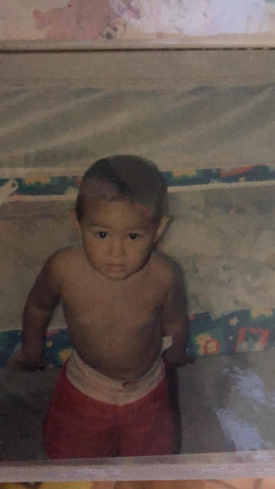
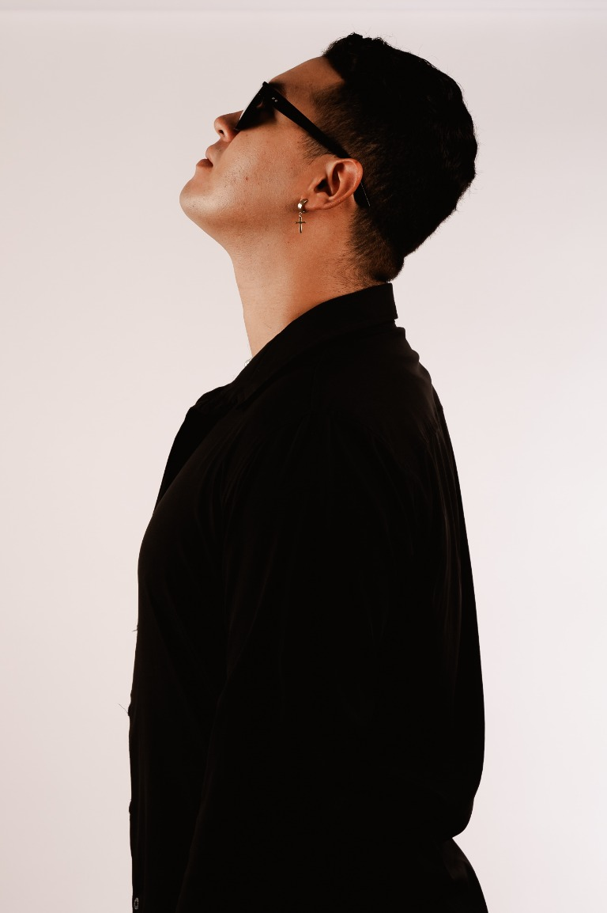
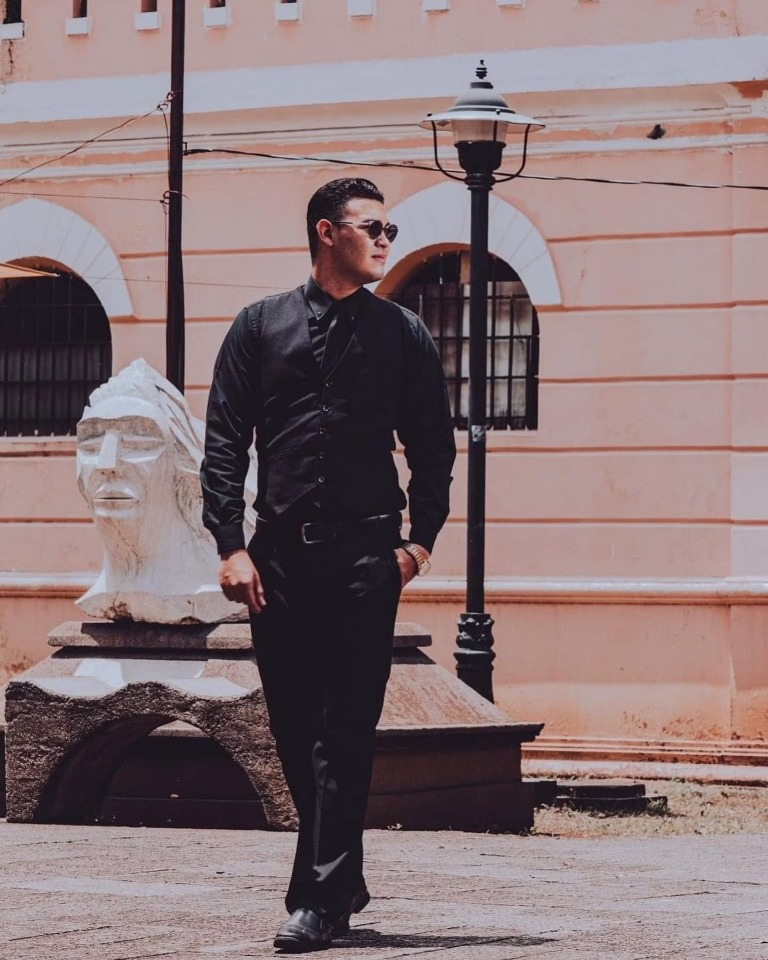

Capítulo I
EL INICIO
Nací en Puntarenas, Costa Rica, el 10 de enero de 1998, en una familia de raíces profundamente porteñas. Soy hijo de una costurera y un capitán de barco, y desde muy joven la música comenzó a ocupar un lugar especial en mi vida.
Mi primer acercamiento real al canto nació en un hogar de adultos mayores, donde conocí a don Joselito, un requintista cuya forma de tocar despertó algo en mí. No fue solo la música: fue la manera en que una canción podía cambiar un ambiente, despertar recuerdos y conectar a las personas.
Tiempo después, en Paracas, Perú, conocí al maestro venezolano Fausto Amaya, con quien viví uno de mis primeros grandes pasos: mi primer show en el Hotel El Emancipador. Ahí entendí que cantar no era solo algo que me gustaba. Era algo que quería convertir en camino.

Capítulo II
EL PROCESO
Volver a Costa Rica significó empezar a construir una identidad propia. Comencé mi carrera como solista bajo el nombre de Pablo Gómez, presentándome en restaurantes, bares, eventos y escenarios que poco a poco fueron formando mi carácter artístico.
En el proceso tuve la oportunidad de compartir escenario con artistas y agrupaciones como Gaviota, Chiqui Chiqui y Víctor Kapusta de Abracadabra, además de vivir momentos importantes como presentarme en la Concha Acústica e inaugurar los Carnavales de Puntarenas 2023.
Cada escenario fue una prueba. Cada canción, una forma de entender mejor mi voz, mi presencia y mi manera de conectar con el público. El proceso no ha sido solamente cantar mejor; ha sido descubrir quién quiero ser cuando estoy frente a una audiencia.

Capítulo III
PABLO GÓMEZ
Hoy, Pablo Gómez representa una propuesta artística construida alrededor de la voz, la elegancia y la emoción. Mi objetivo es desarrollar un sonido y una imagen que puedan ser reconocidos, llevando mis raíces de Puntarenas a escenarios cada vez más grandes.
En 2024, mi música también me llevó a presentarme en el Hotel Faranda Dos Playas, Cancún, México, un paso más dentro de una visión que apunta hacia una carrera internacional.
Pablo Gómez no es solamente un nombre artístico. Es el resultado de cada escenario, cada ensayo, cada error y cada persona que me enseñó algo en el camino.
“Voy a cautivarte con mi voz o morir en el intento.”
Próximas presentaciones →